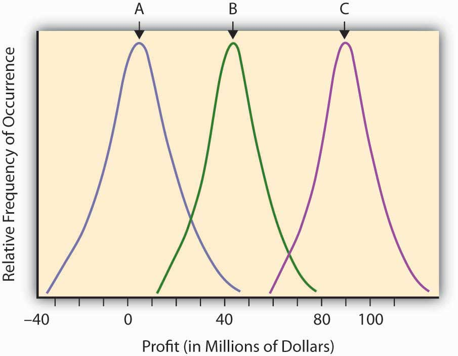
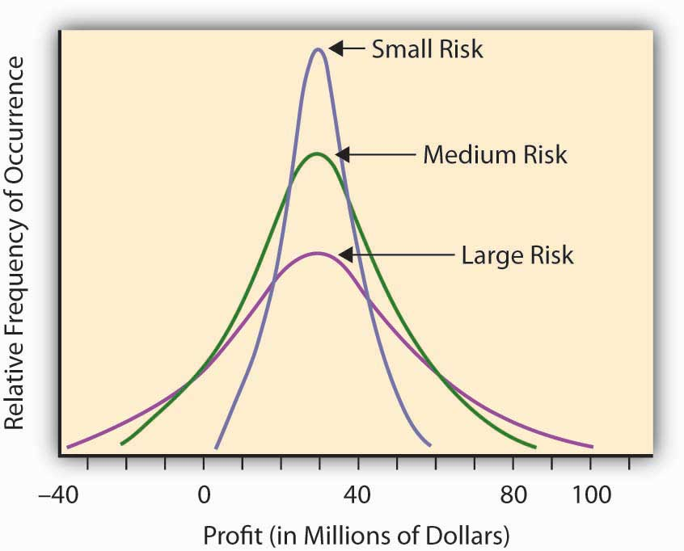
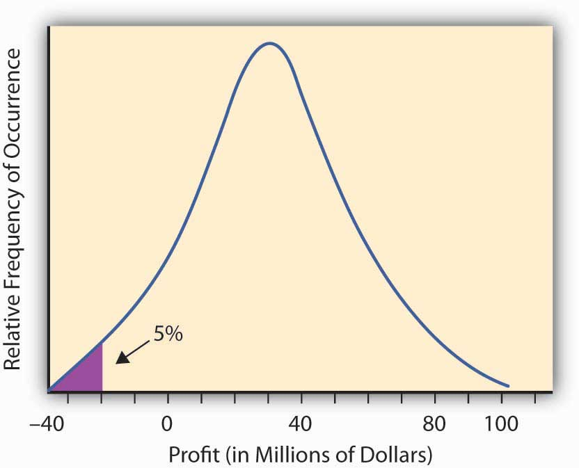
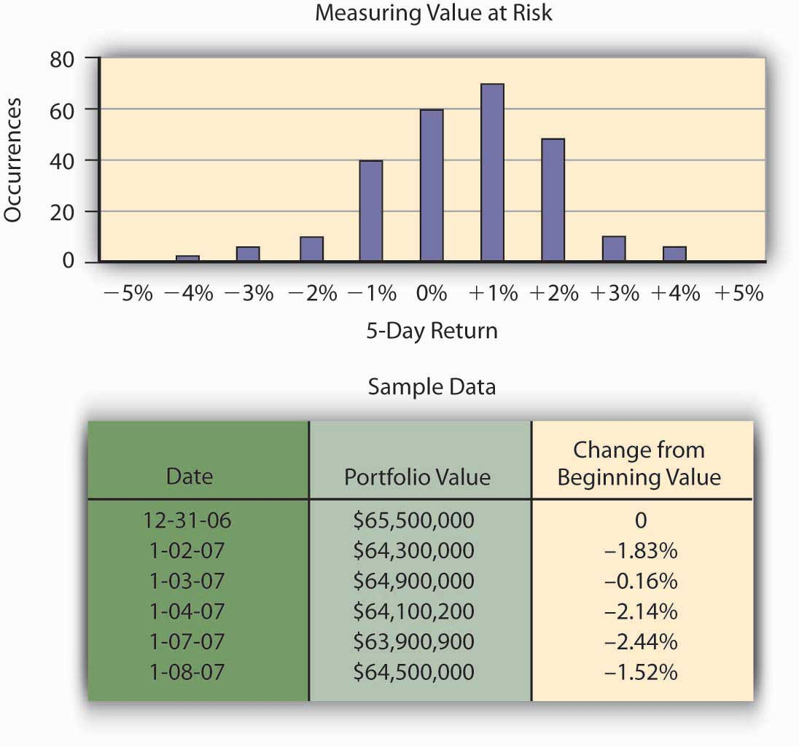

Having developed the concept of probability to quantify the relative likelihood of an uncertain event, and having developed a measure of “expected value” for an uncertain event, we are now ready to try to quantify risk itself. The “expected value” (or mean value or fair value) quantifying the potential outcome arising from an uncertain scenario or situation in which probabilities have been assigned is a common input into the decision-making process concerning the advisability of taking certain actions, but it is not the only consideration. The financial return outcomes of various uncertain research and development, might, for example, be almost identical except that the return distributions are sort of shifted in one direction or the other. Such a situation is shown in Figure 2.4 "Possible Profitability from Three Potential Research and Development Projects". This figure describes the (continuous) distributions of anticipated profitability for each of three possible capital expenditures on uncertain research and development projects. These are labeled A, B, and C, respectively.
Figure 2.4 Possible Profitability from Three Potential Research and Development Projects
Intuitively, in economic terms a risk is a “surprise” outcome that is a consequence of uncertainty. It can be a positive surprise or a negative surprise, as we discussed in Chapter 1 "The Nature of Risk: Losses and Opportunities".
Using the terms explained in the last section, we can regard risk as the deviation from the expected value. The more an observation deviates from what we expected, the more surprised we are likely to become if we should see it, and hence the more risky (in an economic sense) we deem the outcome to be. Intuitively, the more surprise we “expect” from a venture or a scenario, the riskier we judge this venture or scenario to be.
Looking back on Figure 2.4 "Possible Profitability from Three Potential Research and Development Projects", we might say that all three curves actually represent the same level of risk in that they each differ from their expected value (the mean or hump of the distribution) in identical ways. They only differ in their respective expected level of profitability (the hump in the curve). Note that the uncertain scenarios “B” and “C” still describe risky situations, even though virtually all of the possible outcomes of these uncertain scenarios are in the positive profit range. The “risk” resides in the deviations from the expected value that might result (the surprise potential), whether on the average the result is negative or positive. Look at the distribution labeled “A,” which describes a scenario or opportunity/loss description where much more of the possible results are on the negative range (damages or losses). Economists don’t consider “A” to be any more risky (or more dangerous) than “B” or “C,” but simply less profitable. The deviation from any expected risk defines risk here. We can plan for negative as well as positive outcomes if we know what to expect. A certain negative value may be unfortunate, but it is not risky.
Some other uncertain situations or scenarios will have the same expected level of “profitability,” but will differ in the amount of “surprise” they might present. For example, let’s assume that we have three potential corporate project investment opportunities. We expect that, over a decade, the average profitability in each opportunity will amount to $30 million. The projects differ, however, by the level of uncertainty involved in this profitability assessment (see Figure 2.5 "Three Corporate Opportunities Having the Same Expected Profitability but Differing in Risk or Surprise Potential"). In Opportunity A, the possible range of profitability is $5–$60 million, whereas Opportunity B has a larger range of possible profits, between –$20 million and + $90 million. The third opportunity still has an expected return of $30 million, but now the range of values is from –$40 million to +$100. You could make more from Opportunity C, but you could lose more, as well. The deviation of the results around the expected value can measure the level of “surprise” potential the uncertain situation or profit/loss scenario contains. The uncertain situation concerning the profitability in Opportunity B contains a larger potential surprise in it than A, since we might get a larger deviation from the expected value in B than in A. That’s why we consider Opportunity B more risky than A. Opportunity C is the riskiest of all, having the possibility of a giant $100 million return, with the downside potential of creating a $40 million loss.
Figure 2.5 Three Corporate Opportunities Having the Same Expected Profitability but Differing in Risk or Surprise Potential
Our discussion above is based upon intuition rather than mathematics. To make it specific, we need to actually define quantitatively what we mean by the terms “a surprise” and “more surprised.” To this end, we must focus on the objective of the analysis. A sequence of throws of a pair of colored dice in which the red die always lands to the left of the green die may be surprising, but this surprise is irrelevant if the purpose of the dice throw is to play a game in which the number of dots facing up determines the pay off. We thus recognize that we must define risk in a context of the goal of the endeavor or study. If we are most concerned about the risk of insolvency, we may use one risk measure, while if we are interested in susceptibility of portfolio of assets to moderate interest rate changes, we may use another measure of risk. Context is everything. Let’s discuss several risk measures that are appropriate in different situations.
As we mentioned previously, intuitively, a risk measure should reflect the level of “surprise” potential intrinsic in the various outcomes of an uncertain situation or scenario. To this end, the literature proposes a variety of statistical measures for risk levels. All of these measures attempt to express the result variability for each relevant outcome in the uncertain situation. The following are some risk measures.
We can use the rangeThe distance between the highest possible outcome value to the lowest in a distribution. of the distribution—that is, the distance between the highest possible outcome value to the lowest—as a rough risk measure. The range provides an idea about the “worst-case” dispersion of successive surprises. By taking the “best-case scenario minus the worst-case scenario” we define the potential breadth of outcomes that could arise in the uncertain situation.
As an example, consider the number of claims per year in Location A of Table 2.1 "Claims and Fire Losses for Group of Homes in Location A". Table 2.1 "Claims and Fire Losses for Group of Homes in Location A" shows a low of seven claims per year to a high of fourteen claims per year, for a range of seven claims per year. For Location B of Table 2.2 "Claims and Fire Losses ($) for Homes in Location B", we have a range in the number of claims from a low of five in one year to a high of fifteen claims per year, which gives us a range of ten claims per year. Using the range measure of risk, we would say that Location A is less risky than Location B in this situation, especially since the average claim is the same (10.2) in each case and we have more variability or surprise potential in Location B. As another example, if we go back to the distribution of possible values in Table 2.3 "Opportunity and Loss Assessment Consequences of New Product Market Entry", the extremes vary from −$10.2 million to +$8 million, so the range is $18.2 million.
This risk measure leaves the picture incomplete because it cannot distinguish in riskiness between two distributions of situations where the possible outcomes are unbounded, nor does it take into account the frequency or probability of the extreme values. The lower value of –$10.2 million in Table 2.3 "Opportunity and Loss Assessment Consequences of New Product Market Entry" only occurs 1 percent of the time, so it’s highly unlikely that you would get a value this small. It could have had an extreme value of –$100 million, which occurred with probability 0.0000000001, in which case the range would have reflected this possibility. Note that it’s extremely unlikely that you would ever experience a one-in-a-trillion event. Usually you would not want your risk management activities or managerial actions to be dictated by a one-in-a-trillion event.
A more sophisticated (and more traditional) way to measure risk would consider not just the most extreme values of the distribution but all values and their respective occurrence probabilities. One way to do this is to average the deviations of the possible values of the distribution from a central value, such as the expected value E(V) or mean value discussed earlier. We develop this idea further below.
Continuing the example from Table 2.1 "Claims and Fire Losses for Group of Homes in Location A" and Table 2.2 "Claims and Fire Losses ($) for Homes in Location B", we now ask what differentiates the claims distribution of Location A and B, both of which possess the same expected frequency and severity. We have already seen that the range is different. We now examine how the two locations differ in terms of their deviation from the common mean or expected value. Essentially, we want to examine how they differ in terms of the amount of surprise we expect to see in observations form the distributions. One such measure of deviation or surprise is by calculating the expected squared distance of each of the various outcomes from their mean value. This is a weighted average squared distance of each possible value from the mean of all observations, where the weights are the probabilities of occurrence. Computationally, we do this by individually squaring the deviation of each possible outcome from the expected value, multiplying this result by its respective probability or likelihood of occurring, and then summing up the resulting products.Calculating the average signed deviation from the mean or expected value since is a useless exercise since the result will always be zero. Taking the square of each deviation for the mean or expected value gets rid of the algebraic sign and makes the sum positive and meaningful. One might alternatively take the absolute value of the deviations from the mean to obtain another measure called the absolute deviation, but this is usually not done because it results in a mathematically inconvenient formulation. We shall stick to the squared deviation and its variants here. This produces a measure known as the variance. Variance provides a very commonly used measure of risk in financial contexts and is one of the bases of the notion of efficient portfolio selection in finance and the Capital Asset Pricing Model, which is used to explicitly show the trade-off between risk and return of assets in a capital market.
We first illustrate the calculation of the variance by using the probability distribution shown in Table 2.2 "Claims and Fire Losses ($) for Homes in Location B". We already calculated the expected value to be $1.008 million, so we may calculate the variance to be (.01) × (–10.2 –1.008)2 + (.1) × (–.5 –1.008)2+ (.4) × (.1 – 1.008)2+ (.4) × (1 – 1.008)2 + (.09) × (8 – 1.008)2 = 7.445. Usually, variance is denoted with the Greek symbol sigma squared, σ2, or simply V.
As another example, Table 2.4 "Variance and Standard Deviation of Fire Claims of Location A" and Table 2.5 "Variance and Standard Deviation of Fire Claims of Location B" show the calculation of the variance for the two samples of claims given in locations A and B of Table 2.1 "Claims and Fire Losses for Group of Homes in Location A" and Table 2.2 "Claims and Fire Losses ($) for Homes in Location B", respectively. In this case, the years are all treated equally so the average squared deviation from the mean is just the simple average of the five years squared deviations from the mean. We calculate the variance of the number of claims only.
Table 2.4 Variance and Standard Deviation of Fire Claims of Location A
| Year | Number of Fire Claims | Difference between Observed Number of Claims and Mean Number of Claims | Difference Squared |
|---|---|---|---|
| 1 | 11 | 0.8 | 0.64 |
| 2 | 9 | −1.2 | 1.44 |
| 3 | 7 | −3.2 | 10.24 |
| 4 | 10 | −0.2 | 0.04 |
| 5 | 14 | 3.8 | 14.44 |
| Total | 51 | 0 | 26.8 |
| Mean | 10.2 | = (26.8)/4 = 6.7 | |
| Variance 6.70 | |||
| Standard Deviation = Square Root (6.7) = 2.59 | |||
Table 2.5 Variance and Standard Deviation of Fire Claims of Location B
| Year | Number of Fire Claims | Difference between Observed Number of Claims and Mean Number of Claims | Difference Squared |
|---|---|---|---|
| 1 | 15 | 4.8 | 23.04 |
| 2 | 5 | −5.2 | 27.04 |
| 3 | 12 | 1.8 | 3.24 |
| 4 | 10 | −0.2 | 0.04 |
| 5 | 9 | −1.2 | 1.44 |
| Total | 51 | 0 | 54.8 |
| Mean | 10.2 | =(54.8)/4 = 13.70 | |
| Variance 13.70 | |||
| Standard Deviation 3.70 | |||
A problem with the variance as a measure of risk is that by squaring the individual deviations from the mean, you end up with a measure that is in squared units (e.g., if the original losses are measured in dollars, then the variance is measured in dollars-squared). To get back to the original units of measurement we commonly take the square root and obtain a risk measure known as the standard deviation, denoted by the Greek letter sigma (σ). To provide a more meaningful measure of risk denominated in the same units as the original data, economists and risk professionals often use this square root of the variance—the standard deviation—as a measure of risk. It provides a value comparable with the original expected outcomes. Remember that variance uses squared differences; therefore, taking the square root returns the measure to its initial unit of measurement.
Thus, the standard deviation is the square root of the variance. For the distribution in Table 2.3 "Opportunity and Loss Assessment Consequences of New Product Market Entry", we calculated the variance to be 7.445, so the standard deviation is the square root of 7.445 or $2.73 million. Similarly, the standard deviations of locations A and B of Table 2.1 "Claims and Fire Losses for Group of Homes in Location A" and Table 2.2 "Claims and Fire Losses ($) for Homes in Location B" appear in Tables 2.4 and 2.5. As you can see, the standard deviation of the sample for Location A is only 2.59, while the standard deviation of the sample of Location B is 2.70. The number of fire claims in Location B is more spread out from year to year than those in Location A. The standard deviation is the numeric representation of that spread.
If we compare one standard deviation with another distribution of equal mean but larger standard deviation—as when we compare the claims distribution from Location A with Location B—we could say that the second distribution with the larger standard deviation is riskier than the first. It is riskier because the observations are, on average, further away from the mean (more spread out and hence providing more “surprise” potential) than the observations in the first distribution. Larger standard deviations, therefore, represent greater risk, everything else being the same.
Of course, distributions seldom have the same mean. What if we are comparing two distributions with different means? In this case, one approach would be to consider the coefficient of variationThe standard deviation of a distribution divided by its mean., which is the standard deviation of a distribution divided by its mean. It essentially trades off risk (as measured by the standard deviation) with the return (as measured by the mean or expected value). The coefficient of variation can be used to give us a relative value of risk when the means of the distributions are not equal.
The above measures of risk gave the same attention or importance to both positive and negative deviations from the mean or expected value. Some people prefer to measure risk by the surprises in one direction only. Usually only negative deviations below the expected value are considered risky and in need of control or management. For example, a decision maker might be especially troubled by deviations below the expected level of profit and would welcome deviations above the expected value. For this purpose a “semivariance” could serve as a more appropriate measure of risk than the variance, which treats deviations in both directions the same. The semivarianceThe average square deviation of values in a distribution. is the average square deviation. Now you sum only the deviations below the expected value. If the profit-loss distribution is symmetric, the use of the semivariance turns out to result in the exact same ranking of uncertain outcomes with respect to risk as the use of the variance. If the distribution is not symmetric, however, then these measures may differ and the decisions made as to which distribution of uncertain outcomes is riskier will differ, and the decisions made as to how to manage risk as measured by these two measures may be different. As most financial and pure loss distributions are asymmetric, professionals often prefer the semi-variance in financial analysis as a measure of risk, even though the variance (and standard deviation) are also commonly used.
How do banks and other financial institutions manage the systemic or fundamental market risks they face? VaRThe worst-case scenario dollar value loss (up to a specified probability level) that could occur for a company exposed to a specific set of risks. modeling has become the standard risk measurement tool in the banking industry to assess market risk exposure. After the banking industry adopted VaR, many other financial firms adopted it as well. This is in part because of the acceptance of this technique by regulators, such as conditions written in the Basel II agreements on bank regulation.Basel Committee on Banking Supervision (BCBS), International Convergence of Capital Measurement and Capital Standards: A Revised Framework (Basel, Switzerland, 2004). Further, financial institutions need to know how much money they need to reserve to be able to withstand a shock or loss of capital and still remain solvent. To do so, they need a risk measure with a specified high probability. Intuitively, VaR is defined as the worst-case scenario dollar value loss (up to a specified probability level) that could occur for a company exposed to a specific set of risks (interest rates, equity prices, exchange rates, and commodity prices). This is the amount needed to have in reserve in order to stave off insolvency with the specified level of probability.
In reality, for many risk exposures the absolute “worst-case” loss that could be experienced is conceivably unbounded. It’s conceivable that you could lose a very huge amount but it may be highly unlikely to lose this much. Thus, instead of picking the largest possible loss to prepare against, the firm selects a probability level they can live with (usually, they are interested in having their financial risk exposure covered something like 95 percent or 99 percent of the time), and they ask, “What is the worst case that can happen up to being covered 95 percent or 99 percent of the time?” For a given level of confidence (in this case 95 percent or 99 percent) and over a specified time horizon, VaR can measure risks in any single security (either a specific investment represented in their investment securities or loan from a specific customer) or an entire portfolio as long as we have sufficient historical data. VaR provides an answer to the question “What is the worst loss that could occur and that I should prepare for?”
In practice, professionals examine a historical record of returns for the asset or portfolio under consideration and construct a probability distribution of returns. If you select a 95 percent VaR, then you pick the lowest 5 percent of the distribution, and when multiplied by the asset or portfolio value, you obtain the 95 percent VaR. If a 99 percent VaR is desired, then the lowest 1 percent of the return distribution is determined and this is multiplied by the asset or portfolio value to obtain the 99 percent VaR.
Figure 2.6 The 95 percent VaR for the Profit and Loss Distribution of Figure 2.2 "Possible Outcomes for a Roll of Two Dice with the Probability of Having a Particular Number of Dots Facing Up"
We illustrate this further with the Figure 2.6, concerning Hometown Bank.
Market risk is the change in market value of bank assets and liabilities resulting from changing market conditions. For example, as interest rates increase, the loans Hometown Bank made at low fixed rates become less valuable to the bank. The total market values of their assets decline as the market value of the loans lose value. If the loans are traded in the secondary market, Hometown would record an actual loss. Other bank assets and liabilities are at risk as well due to changing market prices. Hometown accepts equity positions as collateral (e.g., a mortgage on the house includes the house as collateral) against loans that are subject to changing equity prices. As equity prices fall, the collateral against the loan is less valuable. If the price decline is precipitous, the loan could become undercollateralized where the value of the equity, such as a home, is less than the amount of the loan taken and may not provide enough protection to Hometown Bank in case of customer default.
Another example of risk includes bank activities in foreign exchange services. This subjects them to currency exchange rate risk. Also included is commodity price risk associated with lending in the agricultural industry.
Hometown Bank has a total of $65.5 million in investment securities. Typically, banks hold these securities until the money is needed by bank customers as loans, but the Federal Reserve requires that some money be kept in reserve to pay depositors who request their money back. Hometown has an investment policy that lists its approved securities for investment. Because the portfolio consists of interest rate sensitive securities, as interest rates rise, the value of the securities declines.Valuation of bonds is covered in general finance text. Bond value = present value of coupons + present value of face value of bond. Hometown Bank’s CEO, Mr. Allen, is interested in estimating his risk over a five-day period as measured by the worst case he is likely to face in terms of losses in portfolio value. He can then hold that amount of money in reserve so that he can keep from facing liquidity problems. This problem plagued numerous banks during the financial crisis of late 2008. Allen could conceivably lose the entire $65.5 million, but this is incredibly unlikely. He chooses a level of risk coverage of 99 percent and chooses to measure this five-day potential risk of loss by using the 99 percent—the VaR or value at risk. That is, he wants to find the amount of money he needs to keep available so that he has a supply of money sufficient to meet demand with probability of at least 0.99. To illustrate the computation of VaR, we use a historical database to track the value of the different bonds held by Hometown Bank as investment securities. How many times over a given time period—one year, in our example—did Hometown experience negative price movement on their investments and by how much? To simplify the example, we will assume the entire portfolio is invested in two-year U.S. Treasury notes. A year of historical data would create approximately 250 price movement data points for the portfolio.The number 250 comes from a rough estimate of the number of days securities can be traded in the open market during any given year. Fifty-two weeks at five days per week yields 260 weekdays, and there are roughly ten holidays throughout the year for which the market is closed. Of those 250 results, how frequently did the portfolio value decrease 5 percent or more from the beginning value? What was the frequency of times the portfolio of U.S. Treasury notes increased in value more than 5 percent? Hometown Bank can now construct a probability distribution of returns by recording observations of portfolio performance. This probability distribution appears in Figure 2.7 "Hometown Bank Frequency Distribution of Daily Price Movement of Investment Securities Portfolio".
Figure 2.7 Hometown Bank Frequency Distribution of Daily Price Movement of Investment Securities Portfolio
The frequency distribution curve of price movement for the portfolio appears in Figure 2.4 "Possible Profitability from Three Potential Research and Development Projects". From that data, Hometown can measure a portfolio’s 99 percent VaR for a five-day period by finding the lower one percentile for the probability distribution. VaR describes the probability of potential loss in value of the U.S. Treasury notes that relates to market price risk. From the chart, we observe that the bottom 1 percent of the 250 observations is about a 5 percent loss, that is, 99 percent of the time the return is greater than –5 percent. Thus, the 99 percent VaR on the returns is –5 percent. The VaR for the portfolio is the VaR on the return times $65.5 million, or –.05 × ($65.5 million) = −$3,275,000. This answers the question of how much risk capital the bank needs to hold against contingencies that should only occur once in one hundred five-day periods, namely, they should hold $3,275,000 in reserve. With this amount of money, the likelihood that the movements in market values will cause a loss of more than $3,275,000 is 1 percent.
The risk can now be communicated with the statement: Under normal market conditions, the most the investment security portfolio will lose in value over a five-day period is about $3,275,000 with a confidence level of 99 percent.Philippe Jorion, Value at Risk: The New Benchmark for Managing Financial Risk, 2nd ed. (McGraw Hill, 2001), ch. 1. Chapter 1 "The Nature of Risk: Losses and Opportunities".
In the context of pure risk exposures, the equivalent notion to VaR is the Maximal Probable Annual Loss (MPAL). As with the VaR measure, it looks at a probability distribution, in this case of losses over a year period and then picks the selected lower percentile value as the MPAL. For example, if the loss distribution is given by Figure 2.3 "Normal Distribution of Potential Profit from a Research and Development Project", and the 95 percent level of confidence is selected, then the MPAL is the same as the 95 percent VaR value. In insurance contexts one often encounters the term MPAL, whereas in finance one often encounters the term VaR. Their calculation is the same and their interpretation as a measure of risk is the same.
We also note that debate rages about perceived weaknesses in using VaR as a risk measure in finance. “In short, VaR models do not provide an accurate measure of the losses that occur in extreme events. You simply cannot depict the full texture and range of your market risks with VaR alone.”Gleason, chapter 12. In addition, the VaR examines the size of loss that would occur only 1 percent of the time, but it does not specify the size of the shortfall that the company would be expected to have to make up by a distress liquidation of assets should such a large loss occur. Another measure called the expected shortfall is used for this. The interested reader is referred to Brockett and AiPatrick L. Brockett and Jing Ai, “Enterprise Risk Management (ERM),” in Encyclopedia of Quantitative Risk Assessment and Analysis, ed. E. Melnick and B. Everitt (Chichester, UK: John Wiley & Sons Ltd., 2008), 559–66. for this calculation.
Some risk exposures affect many assets of a firm at the same time. In finance, for example, movements in the market as a whole or in the entire economy can affect the value of many individual stocks (and firms) simultaneously. We saw this very dramatically illustrated in the financial crisis in 2008–2009 where the entire stock market went down and dragged many stocks (and firms) down with it, some more than others. In Chapter 1 "The Nature of Risk: Losses and Opportunities" we referred to this type of risk as systematic, fundamental, or nondiversifiable risk. For a firm (or individual) having a large, well-diversified portfolio of assets, the total negative financial impact of any single idiosyncratic risk on the value of the portfolio is minimal since it constitutes only a small fraction of their wealth.
Therefore, the asset-specific idiosyncratic risk is generally ignored when making decisions concerning the additional amount of risk involved when acquiring an additional asset to be added to an already well-diversified portfolio of assets. The question is how to disentangle the systematic from the nonsystematic risk embedded in any asset. Finance professors Jack Treynor, William Sharpe, John Lintner, and Jan Mossin worked independently and developed a model called the Capital Asset Pricing Model (CAPM). From this model we can get a measure of how the return on an asset systematically varies with the variations in the market, and consequently we can get a measure of systematic risk. The idea is similar to the old adage that a rising tide lifts all ships. In this case a rising (or falling) market or economy rises (or lowers) all assets to a greater or lesser degree depending on their covariation with the market. This covariation with the market is fundamental to obtaining a measure of systematic risk. We develop it now.
Essentially, the CAPM model assumes that investors in assets expect to be compensated for both the time value of money and the systematic or nondiversifiable risk they bear. In this regard, the return on an asset A, RA, is assumed to be equal to the return on an absolutely safe or risk-free investment, rf (the time value of money part) and a risk premiumThe premium over and above the actuarially fair premium that a risk-averse person is willing to pay to get rid of risk., which measures the compensation for the systematic risk they are bearing. To measure the amount of this systematic risk, we first look at the correlation between the returns on the asset and the returns on a market portfolio of all assets. The assumption is that the market portfolio changes with changes in the economy as a whole, and so systematic changes in the economy are reflected by changes in the level of the market portfolio. The variation of the asset returns with respect to the market returns is assumed to be linear and so the general framework is expressed as
where ε denotes a random term that is unrelated to the market return. Thus the term βA × (Rm − rf ) represents a systematic return and ε represents a firm-specific or idiosyncratic nonsystematic component of return.
Notice that upon taking variances, we have σ2A = .β2A × β2m, + σ2ε, so the first term is called the systematic variance and the second term is the idiosyncratic or firm-specific variance.
The idea behind the CAPM is that investors would be compensated for the systematic risk and not the idiosyncratic risk, since the idiosyncratic risk should be diversifiable by the investors who hold a large diversified portfolio of assets, while the systematic or market risk affects them all. In terms of expected values, we often write the equation as
which is the so-called CAPM model. In this regard the expected rate of return on an asset E[RA], is the risk-free investment, rf, plus a market risk premium equal to βA × (E[Rm] − Rf). The coefficient βA is called the market risk or systematic risk of asset A.
By running a linear regression of the returns experienced on asset A with those returns experienced on a market portfolio (such as the Dow Jones Industrial stock portfolio) and the risk-free asset return (such as the U.S. T-Bill rate of return), one can find the risk measure βA. A regression is a statistical technique that creates a trend based on the data. An actual linear regression to compute future frequency and severity based on a trend is used in Chapter 4 "Evolving Risk Management: Fundamental Tools" for risk management analysis. Statistical books showSee Patrick Brockett and Arnold Levine Brockett, Statistics, Probability and Their Applications (W. B. Saunders Publishing Co., 1984). that βA. = COV(RA, Rm)/β2m where COV(RA,Rm) is the covariance of the return on the asset with the return on the market and is defined by
that is, the average value of the product of the deviation of the asset return from its expected value and the market returns from its expected value. In terms of the correlation coefficient ρAm between the return on the asset and the market, we have βA = ρAm × (βA/βm), so we can also think of beta as scaling the asset volatility by the market volatility and the correlation of the asset with the market.
The β (beta) term in the above equations attempts to quantify the risk associated with market fluctuations or swings in the market. A beta of 1 means that the asset return is expected to move in conjunction with the market, that is, a 5 percent move (measured in terms of standard deviation units of the market) in the market will result in a 5 percent move in the asset (measured in terms of standard deviation units of the asset). A beta less than one indicates that the asset is less volatile than the market in that when the market goes up (or down) by 5 percent the asset will go up (or down) by less than 5 percent. A beta greater than one means that the asset price is expected to move more rapidly than the market so if the market goes up (or down) by 5 percent then the asset will go up (or down) by more than 5 percent. A beta of zero indicates that the return on the asset does not correlate with the returns on the market.
Compare the relative risk of Insurer A to Insurer B in the following questions.
The experience of Insurer A for the last three years as given in Problem 2 was the following::
| Year | Number of Exposures | Number of Collision Claims | Collision Losses ($) |
|---|---|---|---|
| 1 | 10,000 | 375 | 350,000 |
| 2 | 10,000 | 330 | 250,000 |
| 3 | 10,000 | 420 | 400,000 |
The experience of Insurer B for the last three years as given in Problem 3 was the following:
| Year | Number of Exposures | Number of Collision Claims | Collision Losses |
|---|---|---|---|
| 1 | 20,000 | 975 | 650,000 |
| 2 | 20,000 | 730 | 850,000 |
| 3 | 20,000 | 820 | 900,000 |